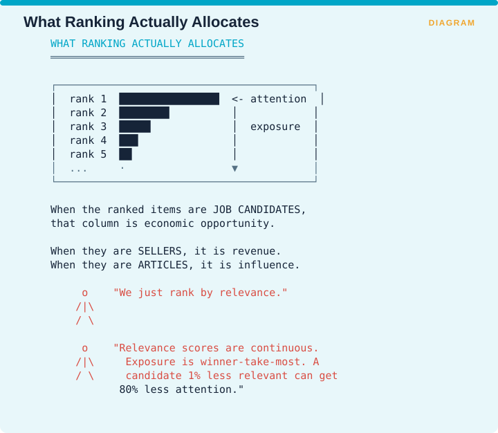
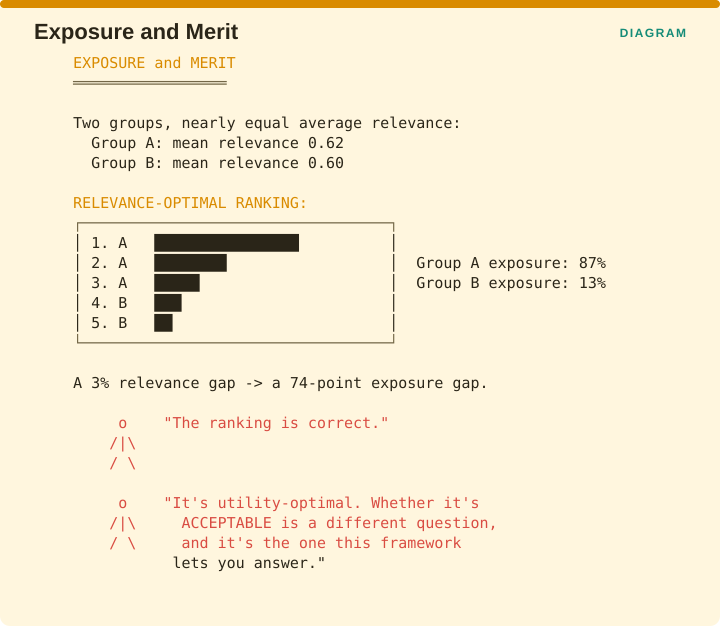
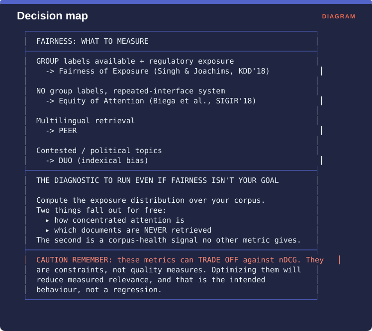

Measuring Retrieval › Chapter 9 - Fairness and Exposure
Chapter 9 - Fairness and Exposure
9.0 A different kind of stakeholder
Every metric so far scores a ranking by how much value it delivers to the person searching. This chapter asks a different question, which is what the ranking does to the things being ranked.
Singh and Joachims set this against the Probability Ranking Principle, the classical claim that the ideal ranking orders items by decreasing probability of relevance because doing so maximizes utility to the user. Their question is whether that uncompromising focus on the user is still appropriate when the items being ranked are not books.

The figure draws attention as a steeply falling column, with rank 1 receiving a great deal, rank 2 receiving roughly half of that, and everything past rank 5 receiving almost nothing. The point is what that column represents once you change what is being ranked. When the ranked items are job candidates, that column is economic opportunity. When they are sellers, it is revenue. When they are articles, it is influence.
A team that says it simply ranks by relevance has still made that allocation. Relevance scores are continuous and vary by small amounts, while exposure is winner-take-most, so a candidate who is one percent less relevant can receive eighty percent less attention.
That mismatch is the technical heart of the chapter. Small differences in relevance produce large differences in exposure because position bias is steep, and this is a measurement fact about ranked interfaces rather than a fairness opinion. Biega et al. note that position bias has been established through eye-tracking and other empirical work, and that it persists even when the items at different ranks are randomly shuffled, which means it is a property of the interface rather than of the content.
9.0.1 Why a RAG practitioner should not skip this chapter
Three reasons, in increasing order of urgency.
- Your corpus has authors. If your enterprise RAG system consistently surfaces one team’s documentation and never another’s, you have made an organizational decision by accident and nobody has reviewed it.
- Regulation is arriving. Fairness in ranked output is already being litigated in hiring and lending, and the arguments transfer.
- It is nearly unmeasured in RAG. Across the 63 RAG evaluation papers surveyed by Brehme et al., exactly one evaluated whether the retrieved documents fairly represent protected groups. If fairness matters for your use case, you are at the frontier and will have to build the instrumentation yourself.
9.1 Fairness of Exposure - group fairness
One-line: Constrain a ranking so that groups of items receive exposure proportional to their merit.
Facets: Fairness | system | ref | R | ESTABLISHED VERIFIED Source: Singh & Joachims, Fairness of Exposure in Rankings, KDD 2018, pp. 2219-2228, doi 10.1145/3219819.3220088 · arXiv:1802.07281
The problem it solves
Ranking by relevance alone can hand almost all the exposure to one group of items even when the groups are nearly equal in quality, because position bias amplifies a small difference in score into a large difference in attention. If the items are people or businesses, that amplification is a decision with consequences, and no metric in the previous chapters can even see it.
The idea
Singh and Joachims give you a framework rather than a single number. You express your fairness criterion as a constraint on how exposure is allocated, and then you find the ranking policy that maximizes user utility subject to that constraint.
Their motivating example is a service connecting employers to potential employees, where exposure translates fairly directly into the probability of getting an interview. Different notions of fairness, such as demographic parity, disparity of treatment and disparity of impact, become different constraints inside the same optimization, so the framework does not force a choice on you.

The figure makes the amplification concrete. Two groups have nearly equal average relevance, with group A at 0.62 and group B at 0.60. The relevance-optimal ranking puts three group A items in the top three positions and group B items at ranks 4 and 5, which gives group A 87% of the exposure and group B 13%. A three percent gap in relevance has become a 74-point gap in exposure.
That ranking is correct in the sense that it is utility-optimal. Whether it is acceptable is a different question, and it is the question this framework lets you answer.
Advantages
- A configurable framework, so you express your own fairness criterion rather than adopting somebody else’s.
- Makes the tradeoff against utility explicit, which means the cost of fairness is measured rather than argued about.
- The group-level formulation is what most regulation targets, so it maps onto the legal question directly.
- Well-developed follow-on literature, including policy learning for fairness in ranking at NeurIPS 2019 and dynamic learning-to-rank at SIGIR 2020, so this is a living line of work.
Disadvantages
- Requires group membership labels, which are frequently unavailable, legally sensitive, or both at once.
- Group fairness leaves individual allocation unresolved, which is the gap Biega et al. target in §9.2.
- You have to choose a fairness criterion, and that choice is normative rather than technical. The framework will not make it for you and should not.
- Requires an estimate of merit, which in practice is the relevance score, so every bias in your relevance estimation gets imported straight into the fairness constraint.
Domain examples
Hiring and marketplace platforms. The design target, and where the stakes are clearest.
Enterprise RAG over multi-team documentation. A genuinely useful reframing. Treat teams as groups and measure whether retrieval systematically favours one team’s documents. It is cheap to compute if your metadata carries an owner field, and it frequently surfaces something real.
Consumer web search. Contested territory. Whether search engines owe publishers any exposure fairness is an active policy debate rather than a settled engineering question.
Recommendation
If you have group labels and anything is at stake in exposure, measure the exposure distribution before you try to constrain it. Most teams have never computed it and are surprised by how concentrated it turns out to be. The measurement is cheap, and the normative decision about what to do with the result is the expensive part, which should be made by people beyond the engineering team.
9.2 Equity of Attention - individual fairness, amortized
One-line: Individual items should receive attention proportional to their relevance, amortized across many rankings.
Facets: Fairness | system | ref | R | ESTABLISHED VERIFIED Source: Biega, Gummadi & Weikum, Equity of Attention: Amortizing Individual Fairness in Rankings, SIGIR 2018, Ann Arbor MI, doi 10.1145/3209978.3210063
The problem it solves
Group fairness can be satisfied while individuals inside a group are treated very differently, and it also requires group labels you may not have or may not be allowed to collect. Beyond that, there is a structural difficulty: position 1 is scarce, so within any single ranking somebody has to come first and somebody has to come last, which means perfect fairness inside one ranking is impossible by construction.
The key distinction, and why both papers exist
The two 2018 papers address different units and answer different questions. Singh and Joachims study group fairness through equal exposure for demographic groups within one ranking. Biega et al. study individual fairness across repeated rankings.

Which one you need follows from your situation. If you have group labels and regulatory exposure, you want Singh and Joachims. If you run a marketplace where each seller is an individual stakeholder with a claim of their own, you want Biega et al. They are not competing answers to one question.
The amortization insight
This is the contribution worth internalizing, and it is the response to the scarcity problem above. Fairness is achieved across a thousand queries rather than within any one of them.

The figure shows three queries. The first returns A, B, C. The second returns B, C, A. The third returns C, A, B. Every individual ranking is unfair in the sense that one item took the top position, and across the three of them each item held position 1 exactly once, so the allocation is fair in aggregate.
Asked whether unfairness is acceptable as long as it averages out, the answer the paper gives is that amortized fairness is the only kind achievable in a ranked interface, because position 1 is scarce by construction. Amortization is the honest response to that scarcity rather than a way of dodging it.
Advantages
- Individual-level, so no group labels are required, which is a substantial practical advantage when those labels are sensitive or missing.
- Amortization is the right frame for a repeated interface, and search is exactly that.
- Actionable over time through an allocation policy that corrects across future rankings.
- Avoids the group-definition problem entirely, since there are no groups to define.
Disadvantages
- Requires tracking attention over time, so you need logging infrastructure that most teams do not have.
- Merit estimation is still the weak link, because attention is allocated proportionally to estimated relevance rather than to true relevance.
- Slow to correct. An item that was under-exposed for six months is not made whole by next month’s ranking.
- Does not satisfy group-fairness requirements, so it may not meet a regulatory obligation even when it is working as intended.
Domain examples
Two-sided marketplaces. The natural fit, since each seller is an individual stakeholder with a legitimate claim to attention proportional to their merit.
Academic and content search. Amortized author-level exposure is a real concern in how citations accumulate, and it is almost never measured.
RAG over an internal knowledge base. A quietly useful application. Amortized attention measured per document reveals which parts of your corpus are never retrieved at all, and documents with zero lifetime exposure are either redundant or unfindable, both of which are worth knowing about.
Recommendation
Use amortized exposure as a corpus-health diagnostic even if fairness is not your motivation. Compute the distribution of lifetime retrieval counts across your corpus, and a long tail of never-retrieved documents tells you either that the corpus is bloated or that your retrieval has blind spots. You cannot distinguish those two from any other metric in this book, and both are actionable.
9.3 Chapter 9 summary

If you have group labels and regulatory exposure, use Fairness of Exposure from Singh and Joachims. If you have no group labels and run a repeated-interface system, use Equity of Attention from Biega et al. For multilingual retrieval, use PEER. For contested or political topics, use DUO, which measures indexical bias, meaning the over-representation of one side of a disputed question.
There is one diagnostic worth running even if fairness is not your goal at all. Compute the exposure distribution across your corpus, and two things fall out for free: how concentrated attention is, and which documents are never retrieved. The second of those is a corpus-health signal that no other metric in this book will give you.
One caution to hold onto. These metrics can trade off against nDCG, because they are constraints rather than quality measures. Optimizing them will reduce your measured relevance, and that is the intended behaviour rather than a regression to be investigated.
Measuring Retrieval · Madhava Gaikwad · First edition, September 2026